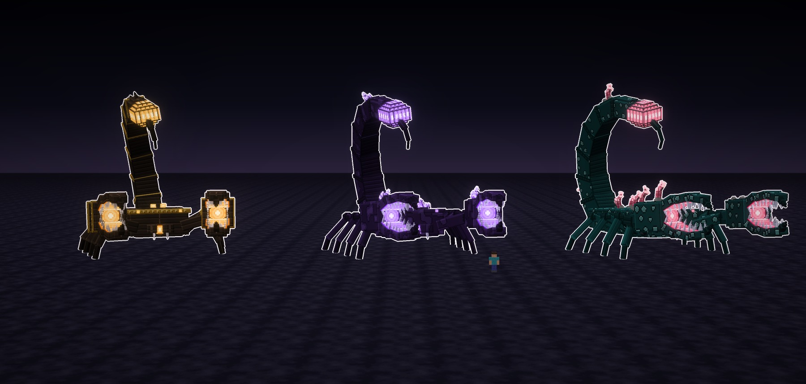
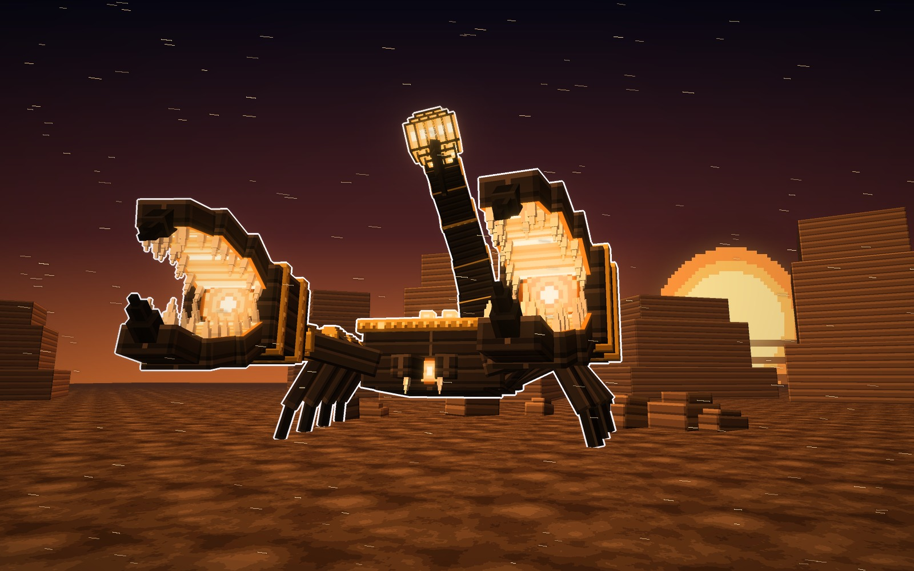
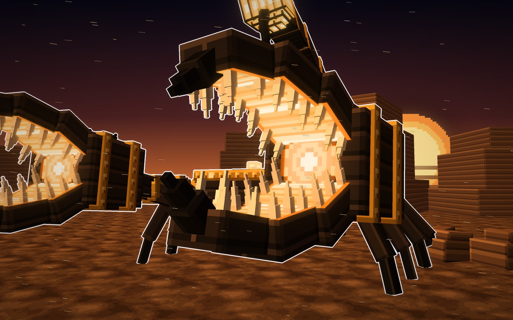
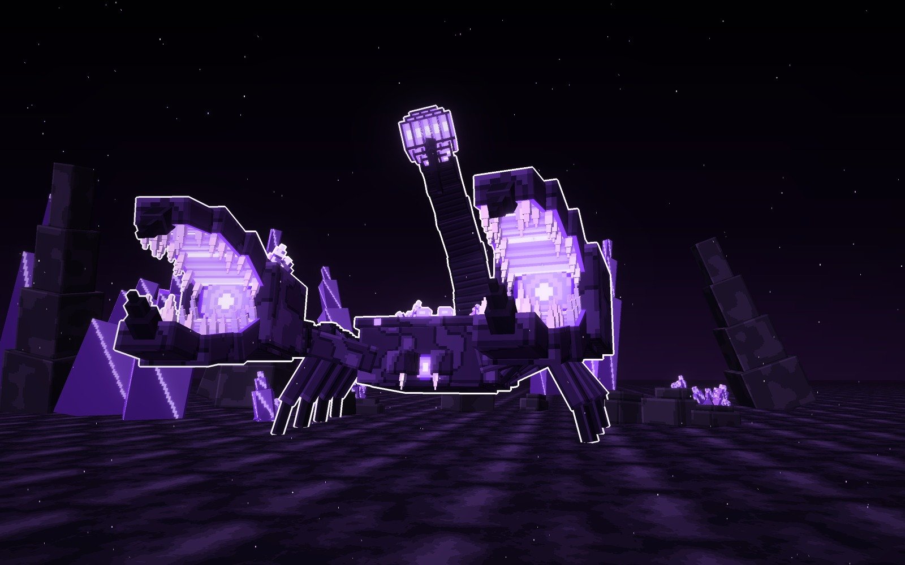
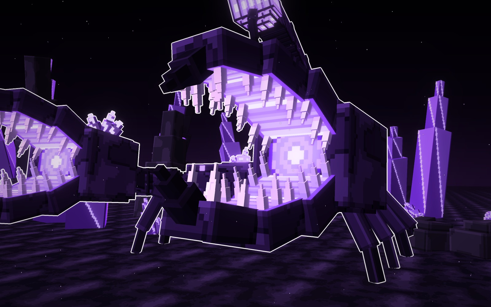
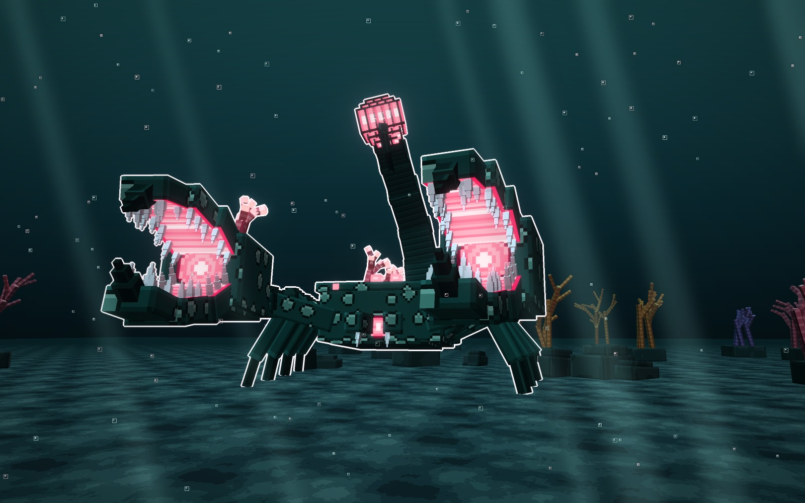
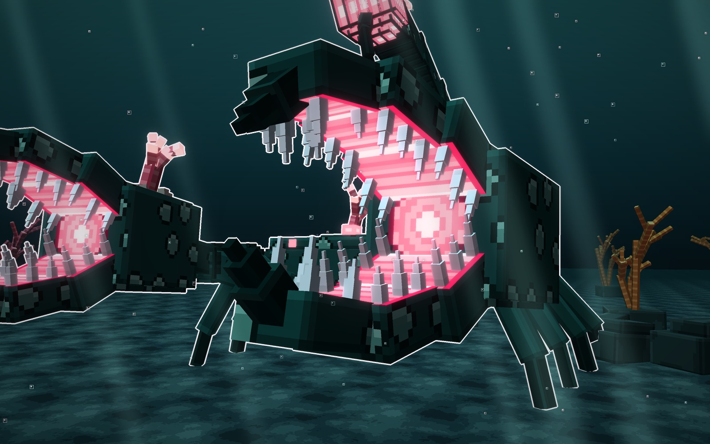
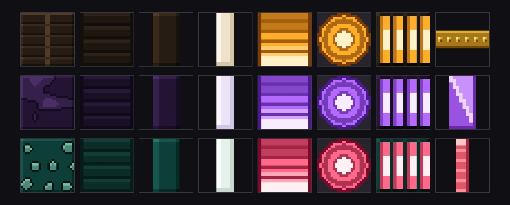

Atalaya · jefe nuevo · ficha de diseño · 12-10-2026
Tenazara, la Alacrana Hambrienta
El tercer monstruo con sus tres tipos, como Simara y Riscara: la misma alacrana colosal, con la cola
arqueada sobre el lomo y las tenazas que son fauces, en versión del Desierto, de la Geoda y
del Arrecife.
Cómo está hecha
Lo que comparten los tres tipos
- El mismo modelo: baja y ancha, sobre ocho patas, con las tenazas por delante y la cola arqueada por encima del lomo hasta la cabeza.
- Las tenazas mandan: cada una es una boca. Se abre arriba y abajo, con dientes en peine, encendida por dentro y con el núcleo al fondo.
- Lo nuevo: tres focos de luz en vez de uno. Las dos tenazas y el bulbo del aguijón, que brilla por gajos.
Igual que en Simara y Riscara
- Texturas limpias, a 8 píxeles por bloque: quitina en bandas, en manchas o con lunares, y juntas en escudos. Sin ruido ni motas sueltas.
- Un neón por tipo: en las tenazas, en los ojos, en la boca y en el bulbo del aguijón.
- Cambian la quitina, el neón y lo que le crece encima.
A · tipo desierto · neón ámbar
Tenazara del Desierto
La de las dunas al ponerse el sol. Quitina negra en bandas, como una armadura, con anillos de oro y
remaches en la cola, las rodillas y las tenazas. Lleva un filo de oro en el escudo de la cabeza y una fila de púas por el
lomo.


Su quitina y sus adornos
- Quitina
- negra en bandas, con la raya del lomo
- Juntas
- escudos negros por debajo y entre los anillos
- Oro
- anillos con remaches en la cola, las rodillas, las muñecas y las tenazas
- Lomo
- una púa en cada anillo y un filo de oro en el escudo
- Aguijón
- bulbo negro con gajos de ámbar
Señas
- La más sobria de las tres: negro y oro.
- Se lee por el oro de los anillos.
quitina
oro
dientes
neón
En pelease entierra en la arena y asoma solo las tenazas; el oro de los anillos avisa por dónde va a salir.
B · tipo geoda · neón violeta
Tenazara de la Geoda
La de la cueva de amatista. Quitina violeta en manchas grandes, como el mármol de Ofidia, y drusas de
amatista que le crecen en el escudo, el lomo, la cola y las palmas de las tenazas.


Su quitina y sus adornos
- Quitina
- violeta oscura en manchas grandes de borde limpio
- Juntas
- escudos violeta casi negro
- Drusas
- racimos de amatista en el escudo, el lomo, la cola y las palmas
- Cristal
- dos tonos partidos en diagonal y un filo de luz
- Aguijón
- bulbo con gajos violeta
Señas
- La más puntiaguda de las tres: los cristales le cambian la silueta.
- Brilla en la oscuridad de la cueva.
quitina
amatista
dientes
neón
En peleaal chocar las tenazas se le rompen las drusas, y los cristales salen disparados.
C · tipo arrecife · neón rosa coral
Tenazara del Arrecife
La del arrecife bajo el agua. Quitina verdeazul con lunares claros, corales de cuerno y percebes que le
crecen por el escudo, el lomo, la cola y las tenazas.


Su quitina y sus adornos
- Quitina
- verdeazul oscura con lunares claros de borde oscuro
- Juntas
- escudos verdeazul casi negro
- Corales
- corales de cuerno, en anillos rosas y con la punta clara
- Percebes
- en grupos, cada uno con la boca oscura arriba
- Aguijón
- bulbo con gajos rosa coral
Señas
- La más viva de las tres: el rosa contra el verdeazul.
- Se lee por los corales, que le salen por todas partes.
quitina
lunares
coral
neón
En pelealos corales sueltan burbujas que frenan al jugador; las tenazas se cierran como una almeja.
Los tres tipos, a escala
La misma alacrana en los tres tipos, con la misma luz y un jugador delante (1,8 bloques). Se ven de frente,
de tres cuartos y de lado. Mide unos 19 bloques de alto con la cola arqueada, 31 de largo y 17 de ancho con las patas.
Los materiales
Las texturas de cada tipo a píxel grande: la quitina, las juntas, las patas, los dientes, el interior de las
tenazas, el núcleo del fondo, el bulbo del aguijón y lo propio de cada tipo (el oro, la amatista y el coral).

Veredicto de Juan
La guardó (12-10-2026), con un aviso: «esta vez es un escorpión literalmente, no es un monstruo como los anteriores; te lo dejo pasar y lo guardo porque lo puedo usar como otra cosa, pero te estás alejando un poco de lo inicial».
Bocetos: materiales/generadores/tenazara_modelo.py y tenazara_escenas.py.